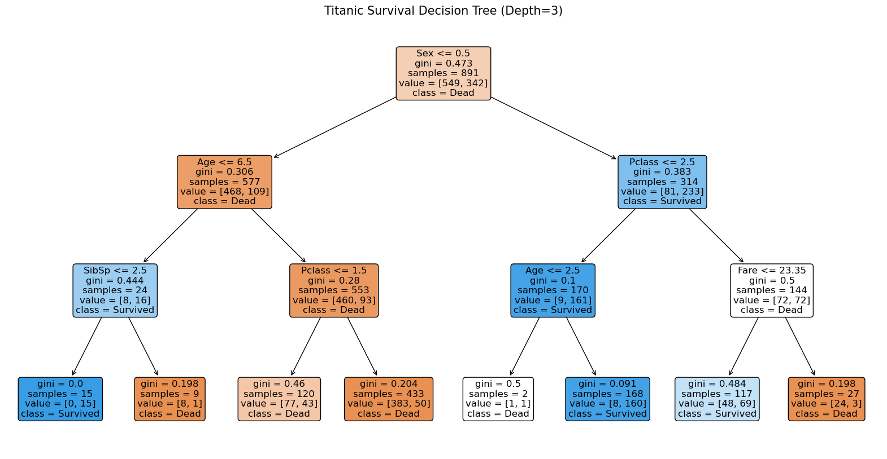
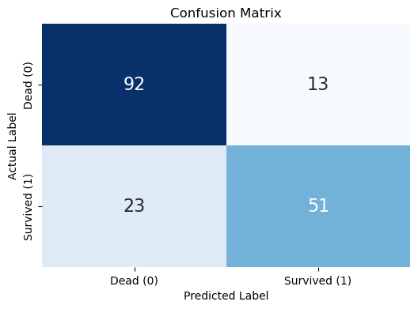
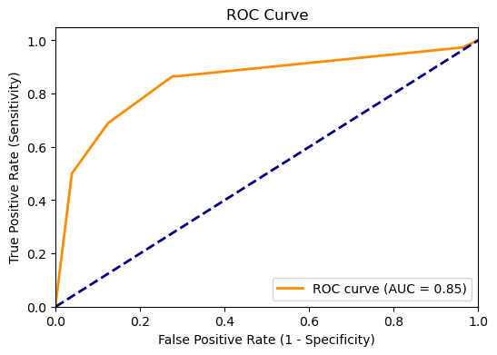
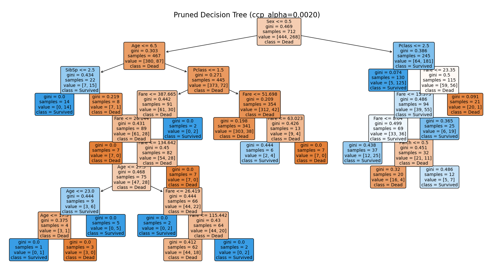
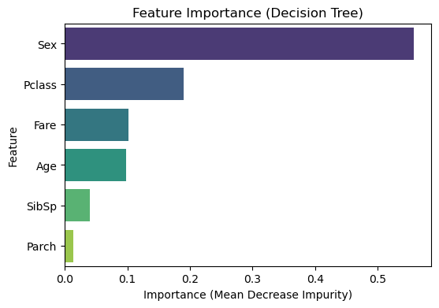

Ch 17. Decision Tree Model#
1. Data Input#

Source: The dataset is from the Kaggle machine learning competition “Titanic - Machine Learning from Disaster.”
Gemini Explanation#
The titanic_train.csv file consists of information on 891 passengers with 12 columns.
Variable Descriptions#
Variable |
Description |
Data Type |
Notes |
|---|---|---|---|
|
Unique passenger ID |
Integer |
Simple identifier |
|
Survival status |
Integer |
0 = Died, 1 = Survived (target variable) |
|
Ticket class |
Integer |
1 = 1st, 2 = 2nd, 3 = 3rd |
|
Passenger name |
String |
|
|
Sex |
String |
male, female |
|
Age |
Float |
177 missing values |
|
Number of siblings/spouses aboard |
Integer |
|
|
Number of parents/children aboard |
Integer |
|
|
Ticket number |
String |
|
|
Passenger fare |
Float |
|
|
Cabin number |
String |
687 missing values (approximately 77% of data is missing) |
|
Port of embarkation |
String |
C = Cherbourg, Q = Queenstown, S = Southampton (2 missing values) |
Dataset Characteristics#
Missing Values:
The
Cabinvariable has 687 missing values, meaning most of the data is empty.The
Agevariable has 177 missing values, and handling these is important for the analysis.The
Embarkedvariable has 2 missing values.
Data Types:
AgeandFareare float types.Name,Sex,Ticket,Cabin,Embarkedare string (Object) data.The rest are integer types.
Survival Rate:
Approximately 38.4% of the 891 passengers survived (
Survived=1).
Descriptive Statistics (describe)#
|
|
|
|
|
|
|
|
|---|---|---|---|---|---|---|---|
count |
891.000000 |
891.000000 |
891.000000 |
714.000000 |
891.000000 |
891.000000 |
891.000000 |
mean |
446.000000 |
0.383838 |
2.308642 |
29.699118 |
0.523008 |
0.381594 |
32.204208 |
std |
257.353842 |
0.486592 |
0.836071 |
14.526497 |
1.102743 |
0.806057 |
49.693429 |
min |
1.000000 |
0.000000 |
1.000000 |
0.420000 |
0.000000 |
0.000000 |
0.000000 |
25% |
223.500000 |
0.000000 |
2.000000 |
20.125000 |
0.000000 |
0.000000 |
7.910400 |
50% |
446.000000 |
0.000000 |
3.000000 |
28.000000 |
0.000000 |
0.000000 |
14.454200 |
75% |
668.500000 |
1.000000 |
3.000000 |
38.000000 |
1.000000 |
0.000000 |
31.000000 |
max |
891.000000 |
1.000000 |
3.000000 |
80.000000 |
8.000000 |
6.000000 |
512.329200 |
2. Survival Classification Using a Tree Model#
Gemini Analysis#
Introduction to the Decision Tree Model#

A decision tree is a model that finds the answer (target) by asking a series of yes/no questions based on data features — much like playing the game of Twenty Questions. It is widely used because it is intuitive and easy to interpret.
Key Concepts#
This model creates tree-shaped rules by finding the questions that best separate the data.
Node: A box containing a question or result.
Root Node: The first question at the very top. The most important variable is placed here.
Internal Node: Questions located in the middle.
Leaf Node: The terminal part where no more questions are asked and a final decision is made.
Edge: A line connecting nodes. It branches according to the answer to a question (True/False).
Impurity: A measure of how mixed correct and incorrect answers are when a question is asked (typically using the Gini coefficient or Entropy). The model creates questions in the direction that reduces impurity (increases purity).
Titanic Survival Prediction Modeling#
A decision tree is constructed to classify survivors (Survived) using the Titanic data. For interpretability, the tree depth (max_depth) is limited to 3.
Preprocessing:
Sex: Converted from string to numeric (male=0, female=1).Age: Missing values filled with the median.Embarked: Excluded for analysis simplicity (could be converted to numeric, but here we focus on key variables).Variables used:
Pclass,Sex,Age,SibSp,Parch,Fare.
1. Interpretation of Estimation Results (Tree Diagram Explanation)#

The decision tree diagram above visually shows how the model predicts whether a Titanic passenger survived. Each box (node) contains the following information:
Condition at the top: The criterion question for splitting the data (e.g.,
Sex <= 0.5).gini: Impurity (0 means perfectly classified, close to 0.5 means mixed).
samples: Number of passengers reaching that node.
value: [number of deaths, number of survivors].
class: Predicted result (Dead or Survived).
1.1 Root Node (Most Important Question)#
The question at the very top is Sex <= 0.5.
Interpretation: The
Sexvariable is encoded as 0 (male) and 1 (female).≤ 0.5 represents male, > 0.5 represents female.
That is, the variable with the greatest influence on survival is sex (
Sex).
Result: Males go to the left branch (edge), females go to the right branch.
1.2 Left Branch (Male Group)#
First split: Among males, the question asks whether
Age <= 6.5(a young child aged 6.5 or below).Yes (child): Survival probability increases (right branch).
No (adult):
Pclass(ticket class) orFareis examined, but overall the probability of death is high.
Notable point: Even among males, very young children show higher survival probability, reflecting the “women and children first” principle.
1.3 Right Branch (Female Group)#
First split: Among females, the question asks whether
Pclass <= 2.5(1st or 2nd class vs. 3rd class).Yes (1st, 2nd class): Very high survival probability. (Most survived).
No (3rd class): Survival rates vary depending on
FareorAge.
Notable point: Females have high survival rates by default, but 3rd-class females have relatively lower survival rates.
2. Feature Importance#
The importance assigned by the tree model to each variable during learning can be confirmed numerically.
Variable |
Feature Importance |
Notes |
|---|---|---|
|
Highest |
The decisive factor separating survival outcomes |
|
High |
Social status influenced survival |
|
Medium |
Particularly important for distinguishing young children among males |
|
Medium |
Correlated with |
3. Summary#
This model learned the rule “women first, children first, and the wealthy (higher-class cabins) first” on its own from the Titanic data. The greatest advantage of decision trees is that they can identify core patterns in data using only “Twenty Questions”-style questions without complex formulas. However, learning too deeply (overfitting) may cause the model to perform poorly on new data, which is why pruning is necessary.
3. Classification Performance#
Gemini Analysis#
The performance of the Titanic survival prediction model (max depth 3) was evaluated using test data (20% of the total data).
1. Confusion Matrix Analysis#
The confusion matrix shows how the model classified actual vs. predicted values.

Predicted: Dead (0) |
Predicted: Survived (1) |
Total |
|
|---|---|---|---|
Actual: Dead (0) |
92 (True Negative) |
13 (False Positive) |
105 |
Actual: Survived (1) |
23 (False Negative) |
51 (True Positive) |
74 |
Total |
115 |
64 |
179 |
Correct predictions:
Deaths correctly predicted as dead: 92
Survivors correctly predicted as survived: 51
Incorrect predictions:
Deaths incorrectly predicted as survived (Type I error): 13
Survivors incorrectly predicted as dead (Type II error): 23
2. Key Performance Metrics#
Metric |
Value |
Description |
|---|---|---|
Accuracy |
0.80 |
Proportion of correct predictions among all predictions. The model correctly predicted survival status approximately 80% of the time. |
Precision |
0.80 (survived class) |
Proportion of actual survivors among those the model predicted as ‘survived.’ (51 / 64) |
Recall |
0.69 (survived class) |
Proportion correctly identified as ‘survived’ among actual survivors. (51 / 74) |
F1 Score |
0.74 |
Harmonic mean of precision and recall. A comprehensive performance metric considering data imbalance. |
Interpretation:
The death prediction ability (Recall 0.88) is superior to the survival prediction ability (Recall 0.69). That is, the model is better at identifying those who died. This may be because death data is more abundant (majority class) or death patterns are more distinct.
Cases of missing survivors (False Negative, 23) outnumber cases of incorrectly predicting deaths as survivors (False Positive, 13).
3. ROC Curve and AUC (Area Under Curve)#

ROC Curve: The closer the orange line is to the upper-left corner, the better the model. Since it is above the dashed line (random guessing), the model is making meaningful predictions.
AUC Value: 0.82 (see graph).
AUC ranges from 0.5 (random) to 1.0 (perfect).
A value of 0.8 or above is generally considered excellent performance.
Overall Assessment#
This model achieves approximately 80% accuracy and an AUC of 0.82 using simple rules (depth 3), demonstrating solid predictive performance. However, the recall for actual survivors is approximately 69%, which is somewhat low. To better identify survivors, improvements such as increasing model complexity (deeper trees) or adding additional variables may be needed.
4. Pruning#
Gemini Analysis#
What Is Pruning?#
Pruning is a technique that removes unnecessary branches to prevent a decision tree from overfitting. When a tree becomes too complex, it fits excessively to the training data (overfitting), resulting in poor prediction performance on new data. Pruning addresses this by reducing the tree size or cutting branches to improve generalization performance.
Types of Pruning#
Pre-pruning
A method that stops further splitting during tree construction if certain conditions (constraints) are not met.
Mainly performed by setting hyperparameters such as
max_depth(maximum depth),min_samples_split(minimum samples required for a split), andmin_samples_leaf(minimum samples required for a leaf node).Advantages: Fast training time and easy implementation.
Disadvantages: May miss important patterns (risk of underfitting).
Post-pruning
A method that first trains the tree to maximum depth (overfitting state), then removes branches that do not contribute to performance.
Cost Complexity Pruning is the representative approach, using the
ccp_alphaparameter to balance tree complexity and impurity reduction.
Titanic Data Example (Post-Pruning Applied)#

The graph above shows the results of applying Cost Complexity Pruning to the Titanic data.
1. Overfitted Model (Full Tree)#
Depth: 23 (very complex)
Training Accuracy (Train Acc): 97.89% (nearly perfectly memorized)
Test Accuracy (Test Acc): 75.98% (weak on new data)
Interpretation: Because the tree is too deep and complex, it has learned the noise in the training data, causing actual prediction performance to suffer.
2. Pruning Process (Alpha Value Adjustment)#
Accuracy changes were observed while gradually increasing the
ccp_alphavalue from 0 (increasing pruning intensity).

Graph interpretation (Accuracy vs Alpha):
When
ccp_alphais 0 (left end), training accuracy (blue line) is highest but test accuracy (orange line) is low.As
ccp_alphaincreases (moving right), training accuracy decreases but a region where test accuracy rises appears.Beyond a certain point, too much is pruned (underfitting), and both accuracies drop sharply.
3. Optimal Pruned Model (Pruned Tree)#
Optimal Alpha: Approximately 0.002
Depth: 9 (substantially reduced from 23 to 9)
Test Accuracy (Test Acc): 81.01% (approximately 5 percentage points higher than 75.98%)
Result: Despite simplifying the tree through pruning, prediction performance actually improved. This is because unnecessary detailed rules were removed, leaving only the essential patterns in the data.
4. Visualized Tree (Pruned Decision Tree)#
The second figure above shows the tree pruned with the optimal
ccp_alpha.While more complex than the previous depth-3 model, it is far more concise than the overfitted model and presents an interpretable level of rules.
5. Feature Importance Analysis#
Gemini Analysis#
1. Methodology#
A decision tree model evaluates feature importance based on Mean Decrease Impurity during the learning process.
Principle: Each time data is split at a node based on a specific feature, impurity decreases. The impurity referred to here is typically the Gini index or Entropy. The greater the decrease in impurity, the better that variable separates the data.
Calculation process:
Sum the impurity reduction at all nodes where a specific variable (e.g.,
Sex) is used.Each node’s reduction is weighted proportionally to the number of samples in that node. (Correctly classifying more samples yields higher importance).
Values calculated for all variables are normalized so that the total sums to 1.
Advantages and caveats:
Intuitive and clearly shows which variable contributed most to explaining the target (survival status).
However, continuous variables (e.g.,
Age,Fare) can have many split points, potentially leading to overestimation (high cardinality bias).
2. Titanic Data Analysis Results#
The feature importances extracted from the Titanic survival prediction model (max depth 5) are as follows.

Feature |
Importance |
Notes |
|---|---|---|
|
0.557764 |
The most dominant variable, accounting for over 50% of total importance. |
|
0.189379 |
Ticket class also has a very significant influence on survival. |
|
0.101589 |
Fare is highly correlated with |
|
0.097832 |
Age is used to distinguish specific age groups (children, elderly, etc.). |
|
0.039846 |
Number of siblings/spouses has relatively small influence. |
|
0.013591 |
Number of parents/children appeared as the least influential variable. |
3. Interpretation#
The decisive role of sex (
Sex): With an importance of approximately 0.56, it has greater influence than all other variables combined. This is consistent withSexbeing the root node (top split) in the tree diagram. The structural principle of “women and children first” is strongly reflected in the data.Socioeconomic status (
Pclass,Fare): Combined,PclassandFarehave an importance of approximately 0.29. This suggests that 1st-class passengers had higher survival probability than 3rd-class passengers.Family relationship variables (
SibSp,Parch): Family-related variables appear to play a supplementary role rather than serving as direct criteria for survival.
In conclusion, sex and ticket class are the most critical explanatory variables for Titanic survival prediction.
Appendix: Python Code#
# 1. Data loading
import pandas as pd
# Read CSV file into a DataFrame
df = pd.read_csv('http://bit.ly/kaggletrain')
# Check dataset structure and info
print("Dataset Shape:", df.shape)
print("\nDataset Info:")
print(df.info())
# Check descriptive statistics
print("\nDescriptive Statistics:")
print(df.describe())
# Check missing values
print("\nMissing Value Counts:")
print(df.isnull().sum())
Dataset Shape: (891, 12)
Dataset Info:
<class 'pandas.core.frame.DataFrame'>
RangeIndex: 891 entries, 0 to 890
Data columns (total 12 columns):
# Column Non-Null Count Dtype
--- ------ -------------- -----
0 PassengerId 891 non-null int64
1 Survived 891 non-null int64
2 Pclass 891 non-null int64
3 Name 891 non-null object
4 Sex 891 non-null object
5 Age 714 non-null float64
6 SibSp 891 non-null int64
7 Parch 891 non-null int64
8 Ticket 891 non-null object
9 Fare 891 non-null float64
10 Cabin 204 non-null object
11 Embarked 889 non-null object
dtypes: float64(2), int64(5), object(5)
memory usage: 83.7+ KB
None
Descriptive Statistics:
PassengerId Survived Pclass Age SibSp \
count 891.000000 891.000000 891.000000 714.000000 891.000000
mean 446.000000 0.383838 2.308642 29.699118 0.523008
std 257.353842 0.486592 0.836071 14.526497 1.102743
min 1.000000 0.000000 1.000000 0.420000 0.000000
25% 223.500000 0.000000 2.000000 20.125000 0.000000
50% 446.000000 0.000000 3.000000 28.000000 0.000000
75% 668.500000 1.000000 3.000000 38.000000 1.000000
max 891.000000 1.000000 3.000000 80.000000 8.000000
Parch Fare
count 891.000000 891.000000
mean 0.381594 32.204208
std 0.806057 49.693429
min 0.000000 0.000000
25% 0.000000 7.910400
50% 0.000000 14.454200
75% 0.000000 31.000000
max 6.000000 512.329200
Missing Value Counts:
PassengerId 0
Survived 0
Pclass 0
Name 0
Sex 0
Age 177
SibSp 0
Parch 0
Ticket 0
Fare 0
Cabin 687
Embarked 2
dtype: int64
import pandas as pd
from sklearn.tree import DecisionTreeClassifier, plot_tree
import matplotlib.pyplot as plt
# Preprocessing
# 1. Convert Sex to numeric (male: 0, female: 1)
df['Sex'] = df['Sex'].map({'male': 0, 'female': 1})
# 2. Fill Age missing values with median
df['Age'] = df['Age'].fillna(df['Age'].median())
# 3. Select features for analysis
features = ['Pclass', 'Sex', 'Age', 'SibSp', 'Parch', 'Fare']
X = df[features]
y = df['Survived']
# Train model (depth limited to 3 for interpretability)
tree_model = DecisionTreeClassifier(max_depth=3, random_state=42)
tree_model.fit(X, y)
# Visualize tree
plt.figure(figsize=(20, 10))
plot_tree(tree_model,
feature_names=features,
class_names=['Dead', 'Survived'],
filled=True,
rounded=True,
fontsize=12)
plt.title(f"Titanic Survival Decision Tree (Depth=3)", fontsize=15)
plt.show()

import pandas as pd
import matplotlib.pyplot as plt
import seaborn as sns
from sklearn.model_selection import train_test_split
from sklearn.tree import DecisionTreeClassifier
from sklearn.metrics import confusion_matrix, classification_report, accuracy_score, roc_curve, auc
# Split data (train:test = 8:2)
X_train, X_test, y_train, y_test = train_test_split(X, y, test_size=0.2, random_state=42)
# Train model (max_depth=3)
model = DecisionTreeClassifier(max_depth=3, random_state=42)
model.fit(X_train, y_train)
# Predict
y_pred = model.predict(X_test)
y_prob = model.predict_proba(X_test)[:, 1]
# Calculate performance metrics
cm = confusion_matrix(y_test, y_pred)
report = classification_report(y_test, y_pred, output_dict=True)
acc = accuracy_score(y_test, y_pred)
# Display results
print("Confusion Matrix:\n", cm)
print("\nAccuracy:", acc)
print("\nClassification Report:\n", classification_report(y_test, y_pred))
# Confusion Matrix Heatmap
plt.figure(figsize=(6, 4))
sns.heatmap(cm, annot=True, fmt='d', cmap='Blues', cbar=False, annot_kws={"size": 16})
plt.title('Confusion Matrix')
plt.xlabel('Predicted Label')
plt.ylabel('Actual Label')
plt.xticks([0.5, 1.5], ['Dead (0)', 'Survived (1)'])
plt.yticks([0.5, 1.5], ['Dead (0)', 'Survived (1)'])
plt.show()
# ROC Curve
fpr, tpr, thresholds = roc_curve(y_test, y_prob)
roc_auc = auc(fpr, tpr)
plt.figure(figsize=(6, 4))
plt.plot(fpr, tpr, color='darkorange', lw=2, label=f'ROC curve (AUC = {roc_auc:.2f})')
plt.plot([0, 1], [0, 1], color='navy', lw=2, linestyle='--')
plt.xlim([0.0, 1.0])
plt.ylim([0.0, 1.05])
plt.xlabel('False Positive Rate (1 - Specificity)')
plt.ylabel('True Positive Rate (Sensitivity)')
plt.title('ROC Curve')
plt.legend(loc="lower right")
plt.show()
Confusion Matrix:
[[92 13]
[23 51]]
Accuracy: 0.7988826815642458
Classification Report:
precision recall f1-score support
0 0.80 0.88 0.84 105
1 0.80 0.69 0.74 74
accuracy 0.80 179
macro avg 0.80 0.78 0.79 179
weighted avg 0.80 0.80 0.80 179


import pandas as pd
import matplotlib.pyplot as plt
import seaborn as sns
from sklearn.model_selection import train_test_split
from sklearn.tree import DecisionTreeClassifier, plot_tree
from sklearn.metrics import accuracy_score
# 2. Overfitted model without pruning (Full Tree)
clf_full = DecisionTreeClassifier(random_state=42)
clf_full.fit(X_train, y_train)
train_acc_full = accuracy_score(y_train, clf_full.predict(X_train))
test_acc_full = accuracy_score(y_test, clf_full.predict(X_test))
depth_full = clf_full.get_depth()
print(f"Full Tree - Depth: {depth_full}, Train Acc: {train_acc_full:.4f}, Test Acc: {test_acc_full:.4f}")
# 3. Post-pruning (using ccp_alpha)
# Calculate effective alpha values path
path = clf_full.cost_complexity_pruning_path(X_train, y_train)
ccp_alphas, impurities = path.ccp_alphas, path.impurities
# Exclude the last alpha (leaves only the root node, usually too simple)
ccp_alphas = ccp_alphas[:-1]
clfs = []
train_scores = []
test_scores = []
# Train model for each alpha
for ccp_alpha in ccp_alphas:
clf = DecisionTreeClassifier(random_state=42, ccp_alpha=ccp_alpha)
clf.fit(X_train, y_train)
clfs.append(clf)
train_scores.append(accuracy_score(y_train, clf.predict(X_train)))
test_scores.append(accuracy_score(y_test, clf.predict(X_test)))
# 4. Visualize accuracy changes by alpha
plt.figure(figsize=(8, 4))
plt.plot(ccp_alphas, train_scores, marker='o', label='Train Accuracy', drawstyle="steps-post")
plt.plot(ccp_alphas, test_scores, marker='o', label='Test Accuracy', drawstyle="steps-post")
plt.xlabel("effective alpha (ccp_alpha)")
plt.ylabel("Accuracy")
plt.title("\nAccuracy vs Alpha for training and testing sets")
plt.legend()
plt.grid(True)
plt.show()
# 5. Select optimal alpha (simplest model among those with highest test accuracy)
# Simply select the largest alpha with max test score (the most heavily pruned)
best_idx = test_scores.index(max(test_scores))
best_alpha = ccp_alphas[best_idx]
best_clf = clfs[best_idx]
print(f"\nBest Pruned Tree - Alpha: {best_alpha:.5f}, Depth: {best_clf.get_depth()}, Test Acc: {max(test_scores):.4f}")
# 6. Visualize optimal tree
plt.figure(figsize=(20, 10))
plot_tree(best_clf,
feature_names=features,
class_names=['Dead', 'Survived'],
filled=True,
rounded=True,
fontsize=10)
plt.title(f"\nPruned Decision Tree (ccp_alpha={best_alpha:.4f})", fontsize=16)
plt.show()
Full Tree - Depth: 23, Train Acc: 0.9789, Test Acc: 0.7598

Best Pruned Tree - Alpha: 0.00203, Depth: 9, Test Acc: 0.8101

import pandas as pd
import matplotlib.pyplot as plt
import seaborn as sns
from sklearn.tree import DecisionTreeClassifier
# Train model
model = DecisionTreeClassifier(random_state=42, max_depth=5)
model.fit(X, y)
# Extract feature importances
importances = model.feature_importances_
feature_imp_df = pd.DataFrame({'Feature': features, 'Importance': importances})
feature_imp_df = feature_imp_df.sort_values(by='Importance', ascending=False)
# Visualization
plt.figure(figsize=(6, 4))
sns.barplot(x='Importance', y='Feature', hue='Feature', data=feature_imp_df, palette='viridis', legend=False)
plt.title('Feature Importance (Decision Tree)')
plt.xlabel('Importance (Mean Decrease Impurity)')
plt.ylabel('Feature')
plt.show()
